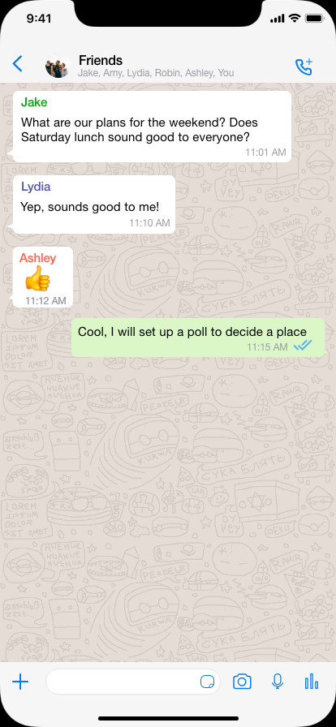
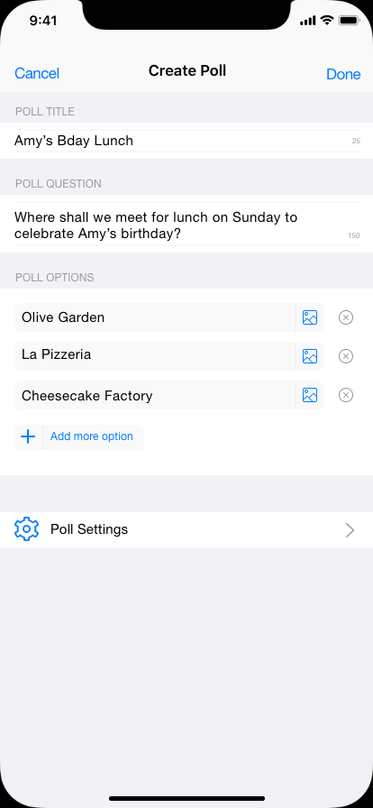
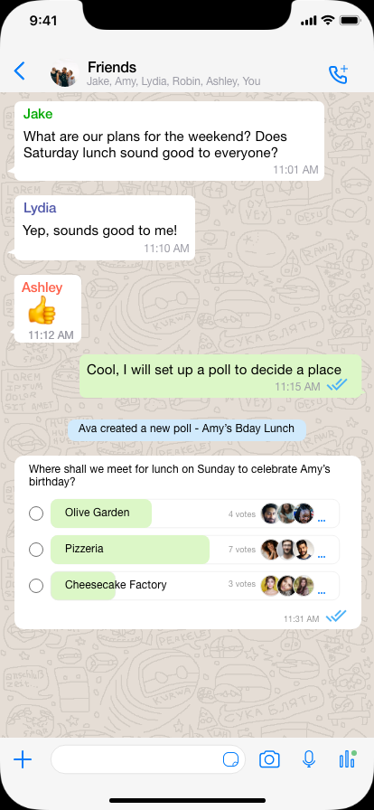
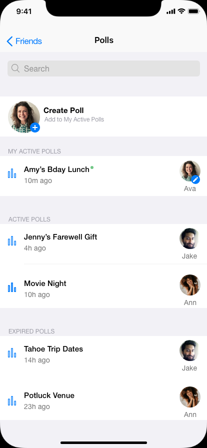
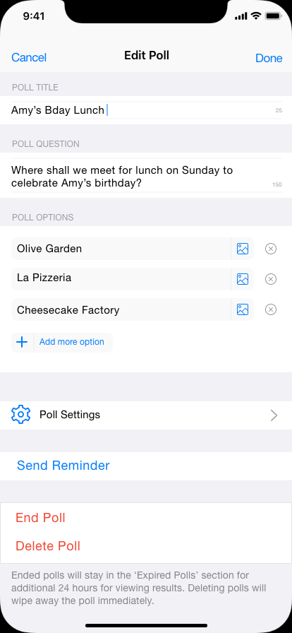
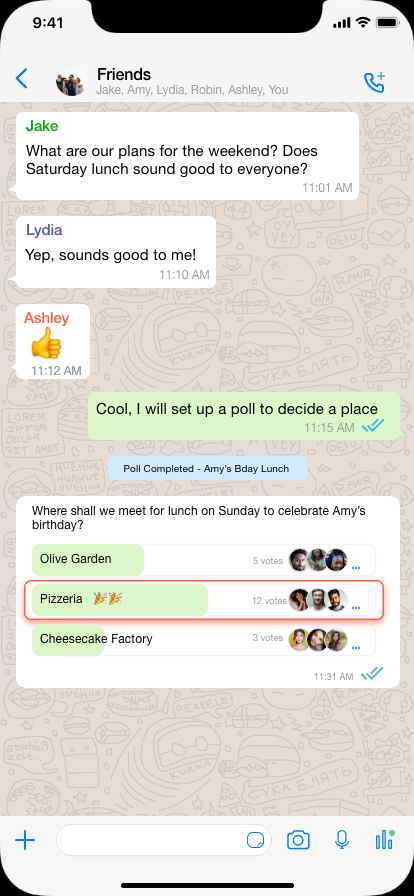
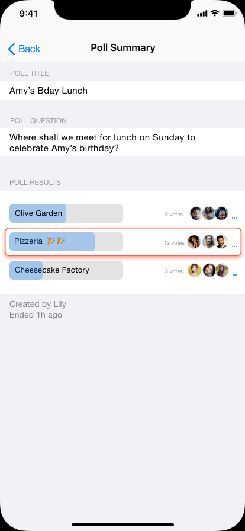

Lightweight polls,
inside the chat.
The final design introduces polls that live entirely within the group conversation — creating options, voting, and seeing the final decision all happen without leaving the thread.
A planner structures options in one place instead of across multiple messages. Poll creation launches from familiar group actions and returns the group to chat the moment it's done.

Problem recognised in chat

Poll structured in one place

Poll appears inline — back in chat
Participants vote directly within the conversation. Options are scannable at a glance, live counts show momentum, and voting never requires leaving the thread.

{kind=link}
{kind=link}
{kind=link}
{kind=link}
{kind=link}
{kind=link}
Polls remain editable after creation. The planner can send reminders, adjust options, or end the poll manually. When it closes, the result surfaces in the chat — so the group knows the decision without an announcement.
{kind=link}

Polls list — accessible from nav
{kind=link}

Planner controls — edit, remind, close
{kind=link}

Decision surfaces in the thread
{kind=link}

Poll Summary — permanent record
Explore the clickable prototype.